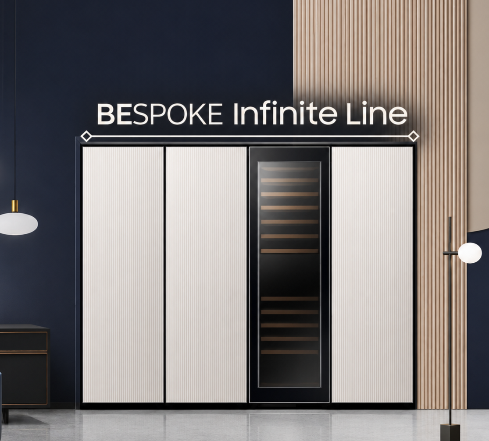

수리 전 완벽했던 그 수평 그대로!

DDak-Fit(딱-핏)
냉장고 수리 복귀 정밀 수평 가이드
DDak-Fit
수평 복귀 준비
STEP 1
냉장고를 빼내기 전,
원래 설치 상태를 촬영합니다.
원래 설치 상태를 촬영합니다.
수리 전 설치 상태를 사진으로 남기고, 재안착 후 도어 하단 높이를 자동 판정하고 조정 가이드를 보여줍니다.
💡 촬영 필수 가이드:
냉장고가 화면 중앙의 절반 정도를 차지하도록 정면 2m 이상 떨어져 찍고, 벽·바닥·가구장 등 주변 배경도 함께 담아주세요. 수리 후에도 같은 렌즈와 위치에서 촬영하세요.
냉장고가 화면 중앙의 절반 정도를 차지하도록 정면 2m 이상 떨어져 찍고, 벽·바닥·가구장 등 주변 배경도 함께 담아주세요. 수리 후에도 같은 렌즈와 위치에서 촬영하세요.
DDak-Fit
수리 진행 & 주의사항
📸 1차 기준 사진 등록 완료
수리 전 사진이 등록되었습니다. 수리가 끝나면 같은 위치에서 다시 촬영해 주세요.
⚠️ 락링 수리 필수 체크 (딱-링 연계)
락링 수리 전 딱-링에서 정확한 부품 코드를 확인하고, 체결 전 락링 앞·뒤 방향을 확인하세요.
Ø 4.20
드라이어 / 응축기
VS
Ø 4.00
혼선 체결 금지!
* 배관 파이 4.20과 4.00 규격 혼동으로 인한 냉매 누설이 잦으니 버니어 캘리퍼스 또는 '딱-링' 자재코드 가이드를 재확인하세요!
🛠️ 제품 재안착 시 체크리스트
1. 후면 급수호스 및 바닥 매립관 간섭 여부 (p.69)
2. 바닥 가이드 레일 안착 및 후면 Caster 밀착 (p.66~67)
3. 후면 벌어짐 방지 브라켓 정상 결합 (p.77)
DDak-Fit
도어 하단 판정
좌우 도어 하단을 정면에서 가까이 찍어주세요.
비교할 두 도어가 만나는 틈을 가운데 세로선에, 두 도어의 하단을 가운데 가로선에 맞춰주세요. 발이나 바닥 선 대신 도어 끝이 선명하게 보여야 합니다.
DDak-Fit
휴대폰 수평계
측정할 평평한 면에 휴대폰 화면을 위로 향하게 놓고, 휴대폰 상단을 냉장고 뒤쪽으로 향하게 하세요.
좌우 기울기—
앞뒤 기울기—
휴대폰이 닿는 면의 참고값입니다. 케이스나 카메라 돌출로 휴대폰이 들릴 수 있습니다. 제품별 수평 조정 기준은 해당 모델 설명서를 확인하세요.
DDak-Fit
수평/단차 터치 가이드
아래 GIF는 빌트인 모델 조정 예시입니다. 다른 모델은 해당 제품 설명서를 확인하세요.
우측 Leg(다리) 조치법
매뉴얼 p.78
수리 전후 사진 겹쳐 보기
DDak-Fit 작업을
종료하시겠습니까?
종료하시겠습니까?
종료하면 현재 작업의 사진이 지워집니다.